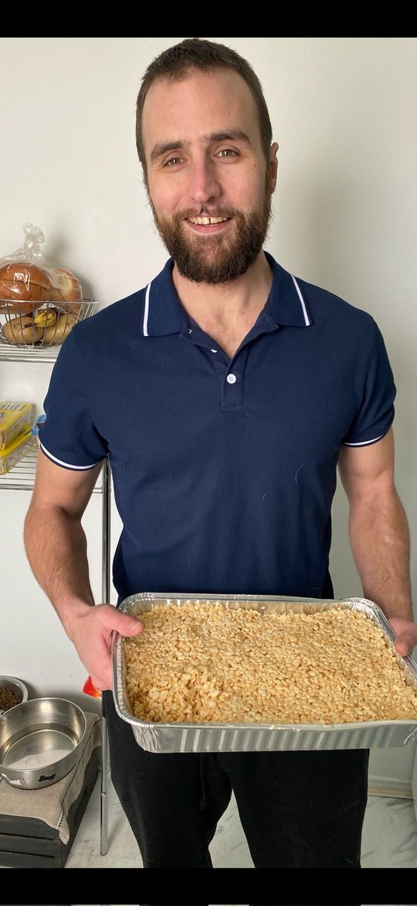

I couldn't outrun myself.
I've moved through the system this site is about: detox, treatment, federal time, parole, re-entry. Not as a researcher. As the person on the file.

The touchdown
Keith calls it in the huddle. We break. I'm the second receiver. Pre-snap I see the SAM linebacker creeping up — he's blitzing. Ball snaps. He comes. I cut my slant high, ball hits me in stride. I plant and explode upfield. Safeties split for a split second and I'm gone.
First career touchdown, University of Montreal, second year. Crowd going crazy, teammates mobbing me. I thought this was it. This was who I was. I scored almost every game after that and led the team in touchdowns.
I thought I had it all figured out. Thought I was untouchable.
I'd gone to Acadia from Ontario trying to outrun my problems. New school, ditch the bad crowd, fresh start. If I got far enough away, things would be different.
Wrong. I couldn't outrun myself. The common denominator in every mess was me.
Freshman year
During school breaks back in Ontario I started experimenting with opioids. At first it felt manageable — use over Christmas or summer, then stop when I returned to campus.
That illusion didn't last. Every time I went home to Guelph I dove deeper, then detoxed cold turkey on campus. I ignored the vicious cycle because football was my escape. As long as I was balling, the rest got swept under the rug.
Second month as a freshman, after a rookie party, things blew up. I caught an assault charge — my first real bid. 30 days on weekends at Mimico.
I remember sitting with two guys from London scheming to steal a TV. I told them it sounded stupid. They laughed. They'd already pegged me as the fish who didn't get it. In my head I was screaming: don't these guys know I'm different? I play football. I'm in university.
I kept playing. Kept using at home. Kept telling myself it was under control.
Thanksgiving 2010 — the end of football
Third year. Supposed to be my breakout season. I borrowed a hundred bucks, drove my roommate to the airport, hit the casino and won five hundred. Right there I decided: we're flying back to Guelph for the weekend. I'd make it back for practice.
I never went back.
A few weeks later my parents realized I'd dropped out. They bought me a bus ticket to Ottawa and sent me to rehab.
I stepped off that bus in winter with a hockey bag and forty dollars. No phone. Had to ask a stranger where the shelter was.
I did detox, then rehab, and actually finished the program. Graduation day I was supposed to head to sober living.
Instead I linked up with three guys from the program who were already using. So I used too.
Within two years, all three were dead. I'm the only one still here.
Roofing, fatherhood, and fentanyl patches
After rehab I caught a break: landed a roofing job. My dad helped me get an apartment. Sixty days in Ottawa and things looked like they might work out.
Then I met a girl. She got pregnant. I was going to be a dad.
I thought I'd turned the corner. I was still smoking fentanyl patches, but I was working, selling roofs, bringing in money. One day she came downstairs pregnant and caught me bent over tinfoil with a straw. I tried to say it was weed.
She wasn't buying it. I left — told myself it was because of my record. Truth was the drugs mattered more.
Jack was born premature at 32 weeks. His mom called me to come to the hospital. I figured she was overreacting and went to work instead. My parents drove down.
For a bit things felt okay — a baby is a hell of a distraction. Then the baby bonus hit: six thousand dollars. I spent it all in weeks on dope.
We got evicted. She and Jack moved in with my parents. I wasn't allowed near them. I ended up back in a shelter.
The Elvis judge
That 2011 charge should've been theft. I'd stolen someone's prescription from a guy who used to sell me pills. But they hit me with robbery. Sick and pissed at my parents for not bailing me out, I said fuck it and pled guilty. My lawyer tried to stop me. I didn't listen.
The judge asked what happened. I told the truth. He struck the guilty plea on the spot — said it sounded like theft, not robbery — and made the Crown drop it.
That was Judge Douglas, aka Stormin' Norman. The papers said he impersonated Elvis to relax. Around that time the Guelph Mercury wrote about him striking a guilty plea from a guy addicted to OxyContin, telling him he would be nuts to plead guilty to robbery that day, given how much was at stake.
That guy was me. I wasn't grateful at the time.
2016 — Owen Sound and back
In 2016 I got clean again. Got driven to Owen Sound for detox, then did a 90-day program in Ottawa. Finished it, got my own place. Eight months later I relapsed.
What came next was the worst stretch: 2018–2019. Streets. Needles. Doing whatever it took for the next hit.
Three weeks before prison
I tried to help a kid named Booster Phil. A dealer had him chained to a fence. I needed dope and had fifty bucks from my dad.
I walked toward the safe injection site and they jumped me. One spotted the bill in my fist.
"He's got a 50!"
I shoved it up my ass. They beat me — broke my nose, stole my shoes — but I didn't let go. I walked inside, fished it out in the bathroom, and went copping.
A guy from AA walked me out so I wouldn't get jumped again. He asked, "Don't you think this is rock bottom?"
I just wanted to get to the next site so I could use.
May 6th, 2019
Woke up sick. Needed money. Took a cab to Shoppers, stole stuff, panicked when it went sideways, jumped in someone's car and took off. High-speed chase.
Got high after. Turned myself in Monday. Pled guilty. Got 48 months.
Jail became my detox.
Parole, relapse, and a more dangerous supply
I was paroled in August 2020. Finished with no violations. Then two months before parole ended, I started using again.
By 2023 it was almost as bad as before — except faster. The drug supply had changed. Unregulated benzos, xylazine mixed into everything. I started having seizures. Withdrawal was brutal.
I was roofing with my brother, using every day. Eventually I caught another charge — six months.
March 2024
When I was released in March 2024, something was different. I didn't try to rebuild everything at once. I went back to work, kept the recovery going, and let the rest come slow. I haven't missed a day or been late in over two years now.
I didn't learn it in rehab or prison. I learned it by showing up.
What I know now
You hit bottom when you decide you're done. I had a hundred chances to. Shoving money up my ass with a broken nose wasn't it. Stealing my son's baby bonus wasn't it. The carjacking wasn't it.
When I was in active addiction, I never thought it was possible to make it out. I didn't even know what "make it out" meant.
I told myself I was only hurting myself. I can see more clearly now what it did to the people around me. It strips you slowly of everything that makes you you, and it infects your family and your friends.
The saddest part is the loss of capacity. Through the constant losses and the bad choices, I narrowed my own future. It wasn't a decision. The standards just dropped, and I drifted further out from everyone.
I loved football. I always will. But I think what I loved was the freedom. The open field. The feeling that anything was still possible. Losing that wasn't losing a game. It was the scope of my whole life narrowing down to the next hit.
Making it out meant getting that back. Being able to plan something and build it. Having a choice again.